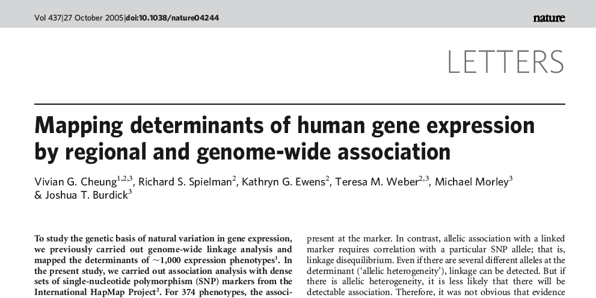
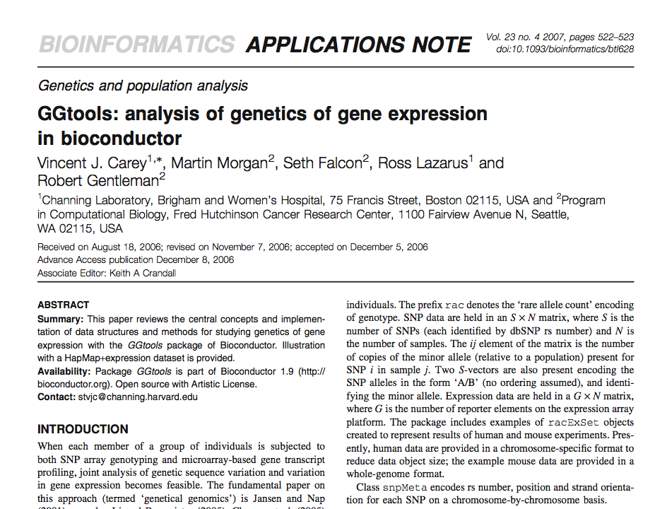
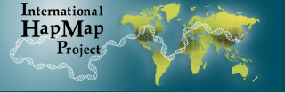
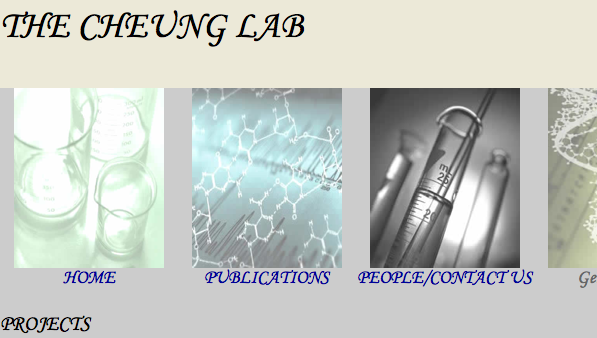
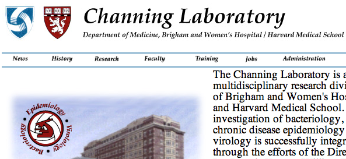

|  |  |
Read the overview
Access the basic query page (you specify gene and chromosome)
Access the pathway query page (you specify a regular expression with which KEGG pathway names are searched; after selecting a pathway, you obtain a list of member genes)
Creation of this service was made possible in part by a grant from NIH NHGRI (P41 HG004059, R. Gentleman, FHCRC, PI).
|  |  |  |
Acknowledgements: We thank the Computational Biology and Health Sciences Computing groups at Fred Hutchinson Cancer Research Center for providing the server and administrative support.
Powered by R (www.r-project.org), CGIwithR (David Firth/Duncan Temple Lang, cran.r-project.org), and Bioconductor (www.bioconductor.org).
R and CGI programming by B.J. Harshfield and V. Carey.
Comments to stvjc at channing dot harvard dot edu.